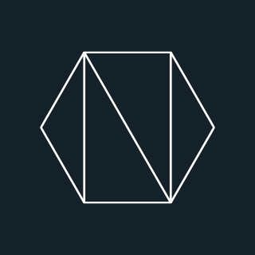

<div>
    <ngx-spinner>
      <div class="la-square-jelly-box la-2x" style="color: #f4696b">
        <div></div>
        <div></div>
      </div>
      <p style="color: white"> Loading... </p>
    </ngx-spinner>
</div>

<mat-drawer-container class="example-container">
    <mat-drawer #drawer class="example-sidenav" mode="side">
      
        <button routerLink="" mat-raised-button style="margin:5px" color="primary">
          <mat-icon aria-hidden="false" aria-label="Example home icon">home</mat-icon>
        </button>
        <button routerLink="profile/consult-profile/{{idUser}}" mat-raised-button style="margin:5px" color="primary">
          Mi Perfil
        </button>
        <button routerLink="skill/consult" mat-raised-button style="margin:5px" color="primary">
          Skills
        </button>
        <button routerLink="profile/filter-profile" mat-raised-button style="margin:5px" color="primary">
          Busqueda de Perfiles
        </button>
        <button routerLink="profile/add-profile/{{idUser}}" mat-raised-button style="margin:5px" color="primary">
            Agregar Perfil
        </button>
        <button routerLink="/login" mat-raised-button style="margin:5px" color="primary" class="log-out-button">
          <mat-icon aria-hidden="false" aria-label="Example home icon">logout</mat-icon>Log Out
        </button>
    </mat-drawer>

    <div class="example-sidenav-content">
        <button type="button" mat-button (click)="drawer.toggle()">
            <span class="material-symbols-outlined">
                menu
            </span>
        </button>
    </div>
    <div class="sidenav-content">
      <router-outlet></router-outlet>
    </div>


    <footer>hola soy el footer jaja</footer>
</mat-drawer-container>
